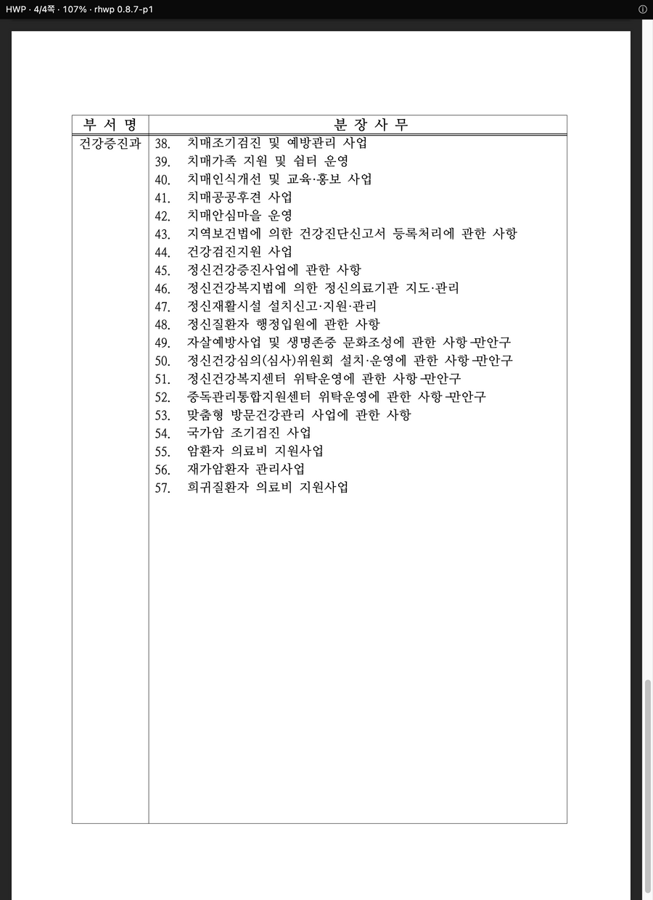
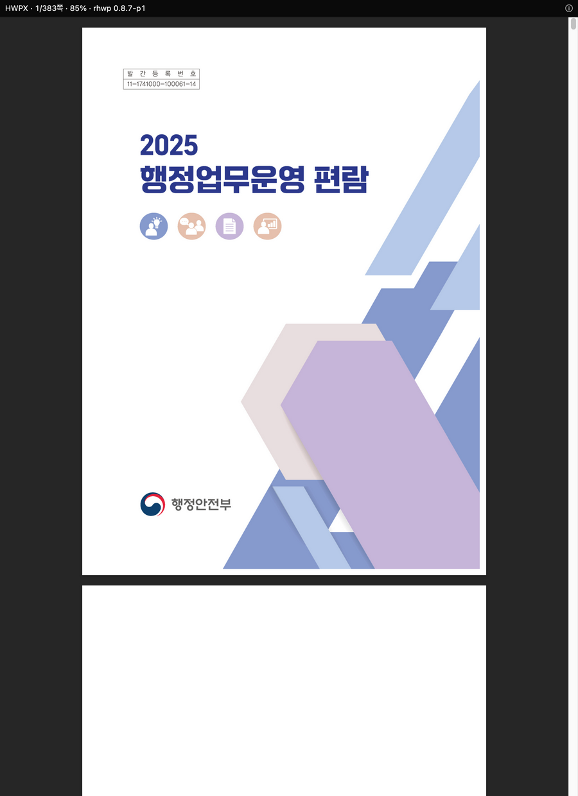
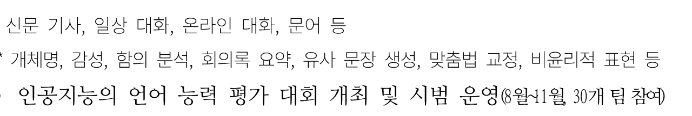

<!doctype html>
<!-- Plugin page images (1600×1000). Query: ?slide=<id>&theme=dark|light
     slide=cover is the cover; the others are screenshots. Viewer PNGs come from
     `orca plugin shot <plugin> --editor <public sample>` (assets/src/shots/). Only public samples.
     Render: assets/src/render.sh images -->
<html>
<head>
<meta charset="utf-8">
<style>
  :root {
    --bg1: #F8FAFC; --bg2: #E0E7FF; --ink: #0F172A; --muted: #475569; --accent: #4338CA;
    --card: #FFFFFF; --edge: rgba(15, 23, 42, 0.10); --shadow: 0 30px 60px rgba(15, 23, 42, 0.20);
    --code: #EEF2FF;
  }
  :root[data-theme="dark"] {
    --bg1: #0B1120; --bg2: #1E1B4B; --ink: #F1F5F9; --muted: #A8B3C4; --accent: #818CF8;
    --card: #111827; --edge: rgba(255, 255, 255, 0.12); --shadow: 0 30px 60px rgba(0, 0, 0, 0.55);
    --code: #1E293B;
  }
  html, body { margin: 0; width: 1600px; height: 1000px; overflow: hidden; }
  body {
    background: radial-gradient(1200px 800px at 85% 20%, var(--bg2), var(--bg1));
    color: var(--ink); font-family: -apple-system, BlinkMacSystemFont, "Apple SD Gothic Neo", "SF Pro Display", sans-serif;
    display: grid; grid-template-columns: 640px 1fr; align-items: center; gap: 40px; padding: 0 90px; box-sizing: border-box;
  }
  .brand { display: flex; align-items: center; gap: 14px; font-size: 22px; font-weight: 600; color: var(--muted); }
  .brand img { width: 44px; height: 44px; }
  h1 { font-size: 52px; line-height: 1.15; letter-spacing: -0.02em; margin: 28px 0 28px; word-break: keep-all; }
  ul { list-style: none; padding: 0; margin: 0; display: grid; gap: 18px; }
  li { font-size: 25px; line-height: 1.45; color: var(--muted); padding-left: 34px; position: relative; word-break: keep-all; }
  li::before { content: ""; position: absolute; left: 0; top: 14px; width: 14px; height: 14px; border-radius: 4px; background: var(--accent); }
  .note { margin-top: 30px; font-size: 17px; color: var(--muted); opacity: 0.8; }
  .shots { position: relative; height: 1000px; }
  .shot { position: absolute; border-radius: 14px; overflow: hidden; border: 1px solid var(--edge); box-shadow: var(--shadow); background: var(--card); }
  .shot img { display: block; width: 100%; }
  .code { font: 20px/1.5 ui-monospace, "SF Mono", Menlo, monospace; background: var(--code); color: var(--ink);
          border: 1px solid var(--edge); border-radius: 14px; padding: 22px 26px; box-shadow: var(--shadow); white-space: pre; }
  .cover h1 { font-size: 64px; }
  .cover .brand img { width: 96px; height: 96px; }
  .cover .brand { font-size: 30px; }
</style>
</head>
<body>
<section id="text"></section>
<section class="shots" id="shots"></section>
<script>
  const q = new URLSearchParams(location.search)
  const theme = q.get('theme') || 'dark'
  document.documentElement.dataset.theme = theme
  const slide = q.get('slide') || 'cover'
  const brand = `<div class="brand">HWP Viewer for Orca</div>`
  const note = `<div class="note">rhwp 엔진으로 그린 화면이며 한글 프로그램과 다를 수 있습니다. 한글과컴퓨터와 관계없는 독립 프로젝트입니다.</div>`
  const slides = {
    cover: {
      text: `${brand}<h1>Orca 안에서<br>한글 문서를 쪽 그대로</h1>
        <ul><li>.hwp · .hwpx 읽기 전용 뷰어</li><li>에이전트도 같은 화면을 PNG로</li><li>오프라인, 권한 없음</li></ul>${note}`,
      shots: `<div class="shot" style="width:470px; left:40px; top:120px"></div>
              <div class="shot" style="width:470px; left:330px; top:220px"></div>`,
    },
    table: {
      text: `${brand}<h1>표가 많은 공문서도<br>쪽 그대로</h1>
        <ul><li>HWP 5.x와 HWPX를 쪽 단위로 그립니다</li><li>표, 그림, 머리말·꼬리말, 가로·세로 쪽</li>
        <li>문서의 원래 글꼴이 있으면 먼저 쓰고, 없으면 함께 실린 공개 글꼴로</li></ul>${note}`,
      shots: `<div class="shot" style="width:600px; left:120px; top:70px"></div>`,
    },
    large: {
      text: `${brand}<h1>수백 쪽 문서도<br>첫 쪽이 바로</h1>
        <ul><li>보이는 쪽부터 그리고 나머지는 스크롤할 때</li><li>383쪽 업무 편람도 첫 쪽까지 1초 안팎</li>
        <li>문서마다 마지막에 본 쪽과 확대를 기억</li></ul>${note}`,
      shots: `<div class="shot" style="width:600px; left:120px; top:70px"></div>`,
    },
    agent: {
      text: `${brand}<h1>에이전트도<br>같은 화면을 봅니다</h1>
        <ul><li>사용자가 보는 쪽은 <code>orca plugin shot</code>으로</li><li>아무 쪽·영역은 함께 실린 스크립트로 PNG와 텍스트를</li>
        <li>표 칸 글자까지 텍스트로, 오프라인에서</li></ul>${note}`,
      shots: `<div class="code" style="position:absolute; left:20px; top:250px; width:740px">node agent/agent-view.mjs 업무계획.hwp \\
  --page 3 --region 100,410,640,108 \\
  --scale 2 --text --json</div>
              <div class="shot" style="width:780px; left:0px; top:470px"></div>`,
    },
  }
  const s = slides[slide]
  if (slide === 'cover') document.body.classList.add('cover')
  document.getElementById('text').innerHTML = s.text
  document.getElementById('shots').innerHTML = s.shots
</script>
</body>
</html>
